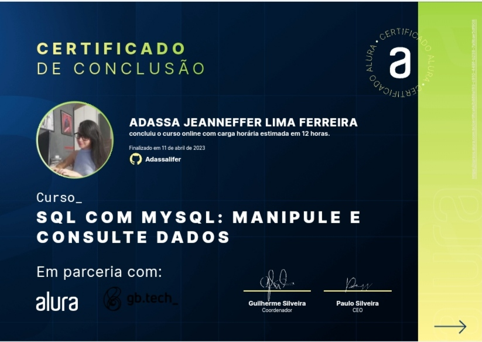
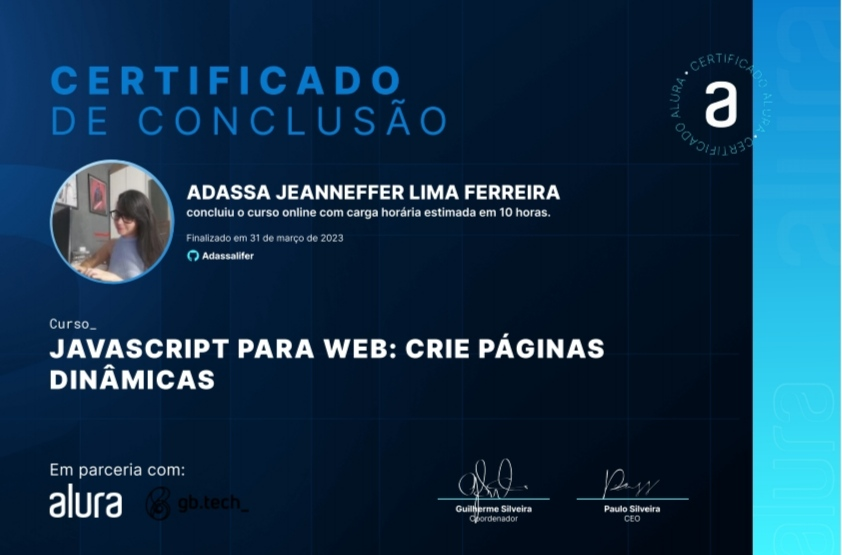
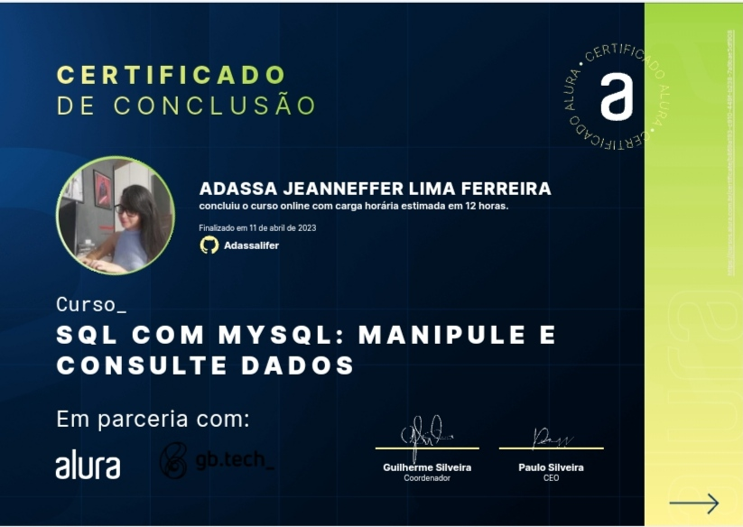
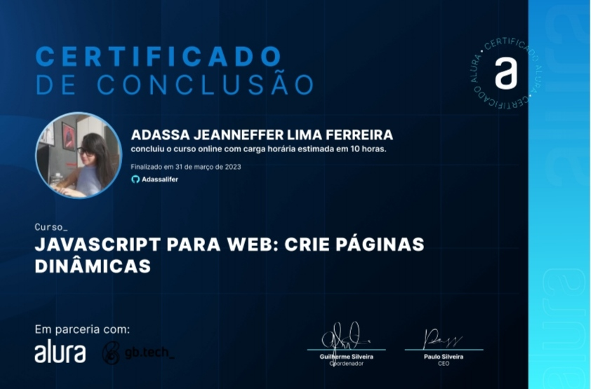

Aplicação para criar listas
Aplicação realizada para o desafio do mentor João Louzada do bootcamp Desenvolve do grupo O Boticário, como treinamento para utilizar o framework React.

Sejam bem-vindos a minha página.
Sou estudante de Análise e Desenvolvimento de Sistemas.
Sou formada em Design de Moda pela Faculdade Senac Pernambuco e atualmente estou aprimorando meus conhecimentos em programação web, fazendo um curso de fullstack.
Minha paixão por criar soluções inovadoras me levou para a área de tecnologia, onde busco aplicar minha criatividade e senso estético para desenvolver projetos de qualidade e impacto.
Estou animada para continuar a aprender e explorar novas possibilidades em minha jornada como desenvolvedora.
Sou uma profissional dedicada, comunicativa e competente.
Sair da zona de conforto na busca por desafios me incentivou a obter novos aprendizados a fim de desempenhar um bom trabalho.
Aplicação realizada para o desafio do mentor João Louzada do bootcamp Desenvolve do grupo O Boticário, como treinamento para utilizar o framework React.
O projeto teve como objetivo a criação de uma aplicação com sons de instrumentos musicais, realizado durante o curso de Javascript no bootcamp do Grupo O Boticário.
O projeto tem como objetivo a criação de uma página inicial de um site de imóveis para exercitar as habilidades de front-end, realizado durante o curso de Javascript.

Site criado com o propósito de receber orçamentos e fazer a divulgação do meu trabalho de cosmaker.

Este projeto foi solicitado pela faculdade SENAC. Em sua primeira etapa, foram elaborados formulários de inscrição utilizando a ferramenta MySql. Na segunda, foi desenvolvido no Figma tanto o protótipo quanto o front-end do site. A interface visa realizar uma inscrição fictícia para o ingresso na escola de magia de Hogwarts.


 


